Specially Processed American Me by Jaime Sunwoo is a surreal autobiographical performance using SPAM, the canned meat, as a portal into her Asian American upbringing and her family's experiences of the Korean War. It investigates SPAM's legacy in the military, its significance in the Asia-Pacific, and its influence on Asian cuisine through music, shadowplay, and cooking. Oscillating wildly between absurd humor and sober tragedy, Specially Processed American Me is a thought-provoking exploration of one of America's most misunderstood foods.
In addition to performances, Specially Processed American Me holds food history and storytelling workshops over a communal SPAM meal. To learn more, see our Workshops and Performances pages and follow @speciallyprocessed on Facebook and Instagram.
Specially Processed American Me is currently available for booking performances, workshops, and lectures. For booking inquiries, contact jaimesunwoo(at)gmail(dot)com
The premiere production of Specially Processed American Me, produced by Free Rein Projects, Ping Chong and Company, and Dixon Place, was made possible with support from the Queens Council on the Arts' Artist Commissioning Program, Asian Women Giving Circle, the NYC Women's Fund for Media, Music and Theatre by the City of New York Mayor's Office of Media and Entertainment in association with The New York Foundation for the Arts, Brooklyn Arts Fund, MVRP Foundation, The Laundromat Project, and The Jim Henson Foundation. Specially Processed American Me was developed through BRIClab, HB Studio Rehearsal Space Residency, BAX Upstart Program, Barn Arts Residency, Leviathan Lab, and FailSafe.
 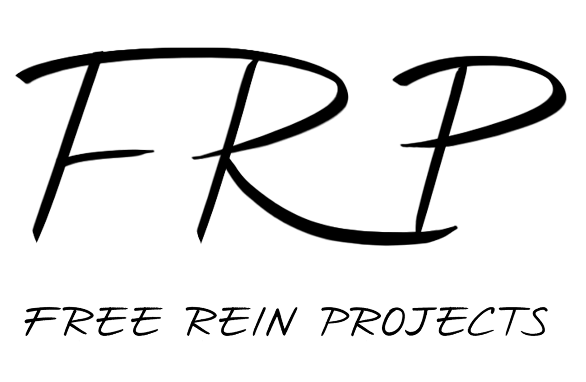
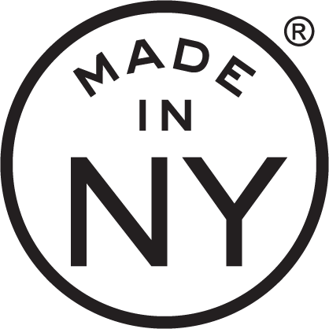
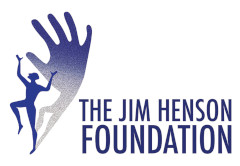
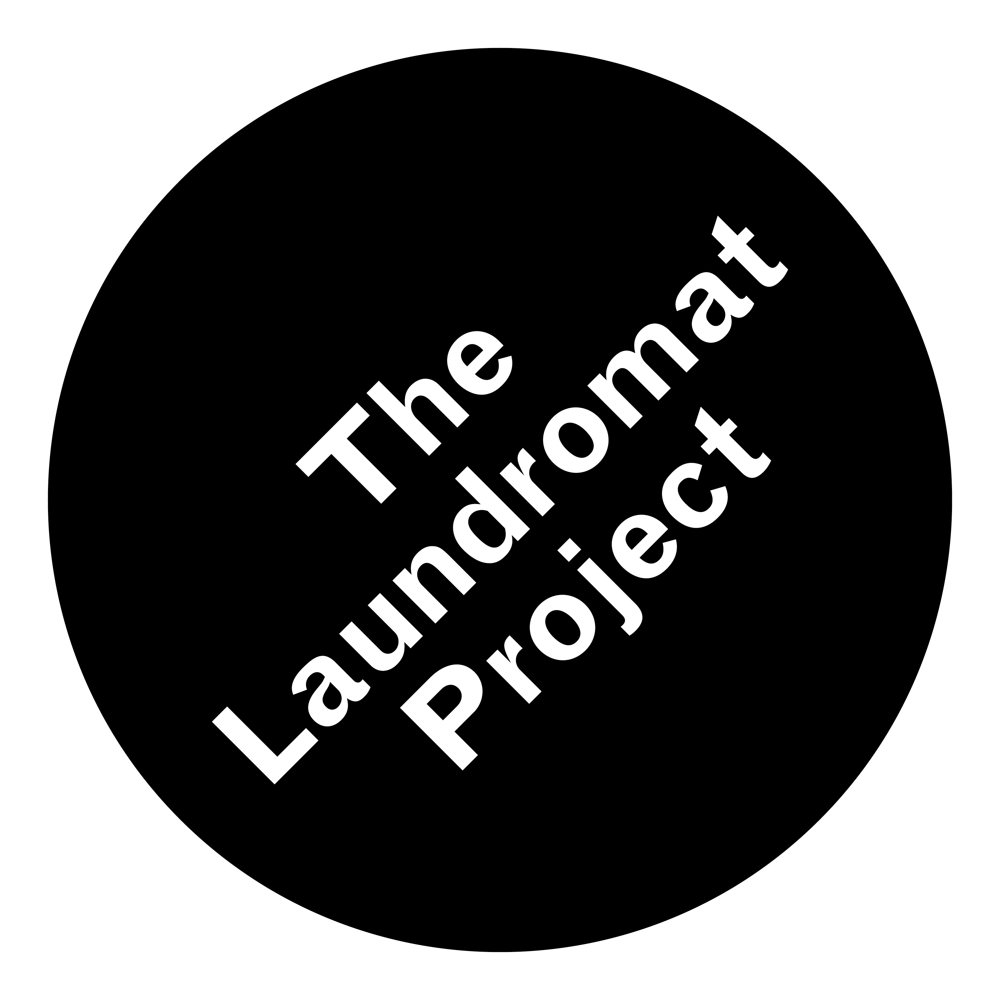
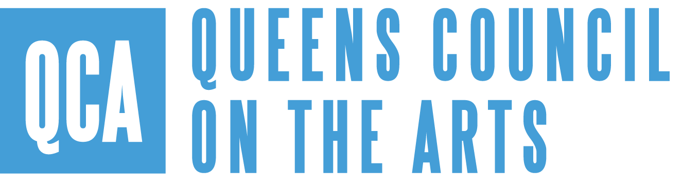
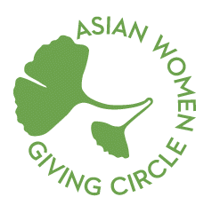
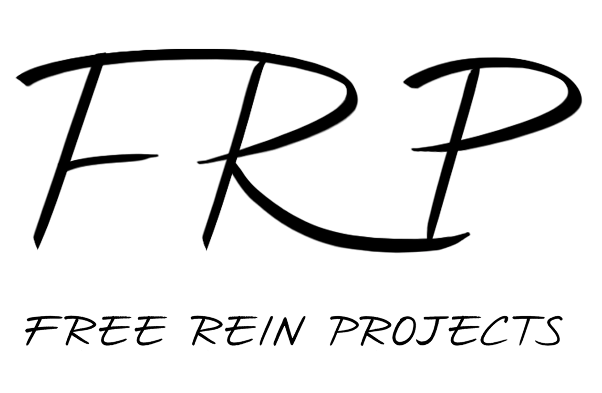
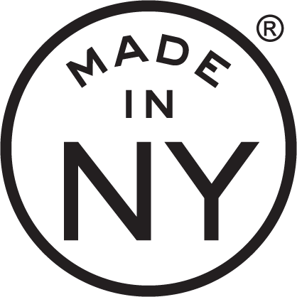
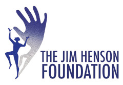
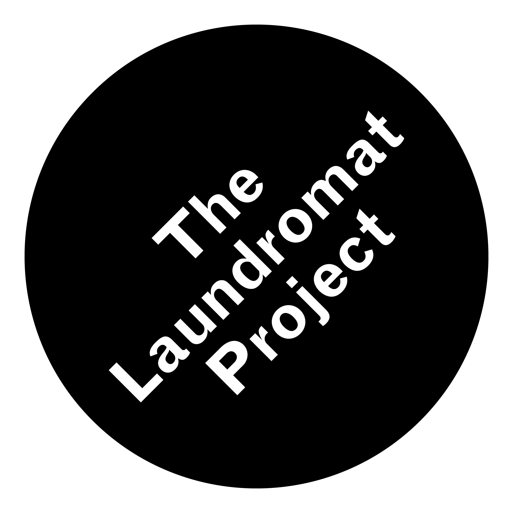
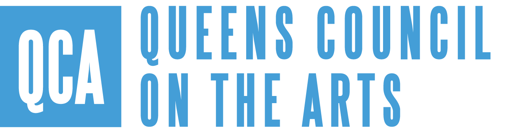
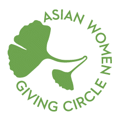
Jaime Sunwoo is a Korean American multidisciplinary artist from Brooklyn, New York working in visual art, theater, film, and public art. Her works connect personal narratives to global histories through surreal storytelling. She studied art at Yale University, and was a fellow for Ping Chong and Company and The Laundromat Project. Her work has been presented at Park Avenue Armory, Abrons Art Center, BAX, JACK, The Tank, Flux Factory, Art in Odd Places, Gallery Korea at KCCNY, Open Source Gallery, and Westbeth Gallery. She has led workshops, given lectures, and joined panel discussions at The Metropolitan Museum of Art, Museum of Food and Drink, Yale University, New York University, The Wang Center at Stony Brook University, and Mills College. More at jaimesunwoo.com / @jaimesunwoo
Free Rein Projects, founded by Jaime Sunwoo in 2014, produces multidisciplinary performance projects in theater, visual art, film, and public art. Free Rein Projects has developed Specially Processed American Me through BRIClab, HB Studio Rehearsal Space Residency, BAX Upstart Program, Barn Arts Residency, Leviathan Lab, and FailSafe with support from the Queens Council on the Arts' Artist Commissioning Program, Ms. Foundation for Women in association with Asian Women Giving Circle, the NYC Women's Fund for Media, Music and Theatre by the City of New York Mayor's Office of Media and Entertainment in association with The New York Foundation for the Arts, Brooklyn Arts Fund, MVRP Foundation, The Laundromat Project, and The Jim Henson Foundation.
Directors: Karim Muasher, Jaime Sunwoo
Playwright: Jaime Sunwoo
Composer, Lyricist, Sound Designer: Matt Chilton
Props, Puppets, Costume Designer: Jaime Sunwoo
Projection Designers: Cinthia Chen, Jaime Sunwoo
Lighting Designer: Sarah Lurie
Technical Director: Justin Perkins
Dramaturg: Alex Lee